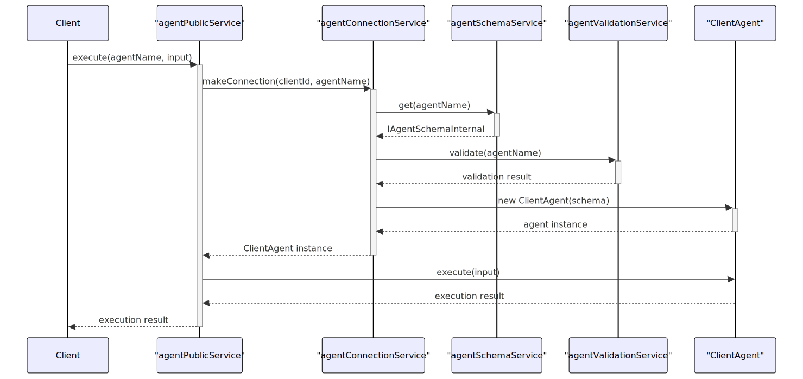
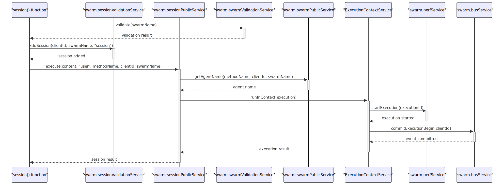
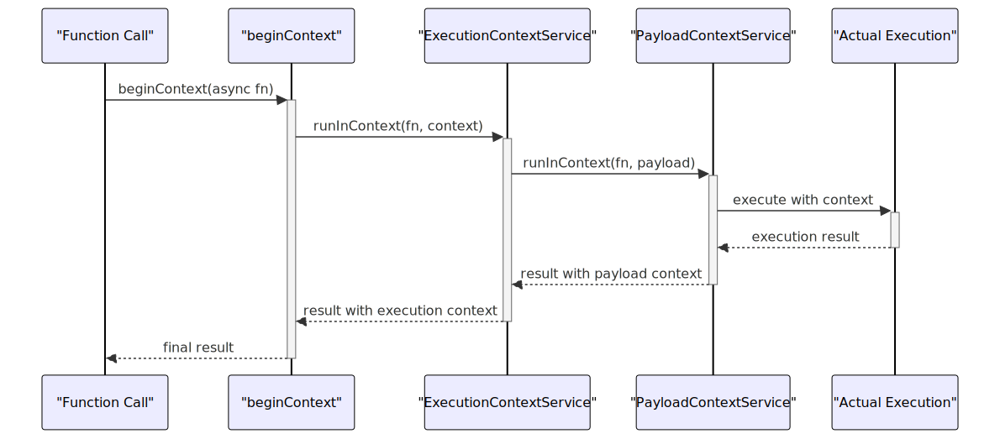

The agent-swarm-kit framework employs a sophisticated layered service architecture built around dependency injection patterns. This document provides an overview of the service organization, layer interactions, and architectural patterns that enable scalable multi-agent orchestration.
For detailed information about the dependency injection container implementation, see Dependency Injection. For specifics about individual service layers, see Schema Services, Connection Services, Public Services, and Validation Services.
The framework organizes services into distinct layers, each with specific responsibilities and clear separation of concerns. This layered approach enables modularity, testability, and maintainable code organization across the entire swarm system.
The service architecture follows a clear layered pattern where external applications interact with Public Services, which delegate to Connection Services, which coordinate with Schema and Validation Services, all supported by Context and Base Infrastructure services.

The framework organizes services into six primary categories, each serving distinct architectural purposes:
| Service Category | Purpose | Examples | Service Count |
|---|---|---|---|
| Base Services | Core infrastructure and utilities | loggerService, busService, perfService, aliveService, docService |
5 |
| Context Services | Execution and request context management | executionContextService, methodContextService, payloadContextService, schemaContextService |
4 |
| Schema Services | Configuration and schema definitions | agentSchemaService, toolSchemaService, swarmSchemaService, completionSchemaService, storageSchemaService, stateSchemaService, mcpSchemaService, computeSchemaService |
12 |
| Connection Services | Instance lifecycle and resource management | agentConnectionService, sessionConnectionService, swarmConnectionService, storageConnectionService, stateConnectionService |
9 |
| Public Services | External API surface | agentPublicService, sessionPublicService, swarmPublicService, storagePublicService, statePublicService |
11 |
| Validation Services | Data integrity and constraint validation | agentValidationService, toolValidationService, sessionValidationService, swarmValidationService, storageValidationService |
12 |
| Meta Services | Component metadata management | agentMetaService, swarmMetaService |
2 |
The service architecture is built around a centralized dependency injection container that manages service instantiation, lifecycle, and inter-service dependencies.
The DI container follows a three-phase initialization pattern: service registration via provide(), service injection via inject(), and container initialization via init().

The swarm object exported from the main library serves as the primary dependency injection container, providing access to all registered services through a unified interface defined by ISwarmDI. This container aggregates services from all categories into a single, type-safe interface.

Public services act as the external API surface, delegating operations to connection services for actual implementation. This pattern provides clean separation between public interfaces and internal resource management.

The high-level functions (session, complete, makeConnection) demonstrate the service delegation pattern by accessing services through the swarm container.

Schema services provide configuration data while validation services ensure data integrity and constraint compliance. Connection services coordinate between these layers to maintain system consistency.

Context services provide execution-scoped data and utilities that span across service boundaries, enabling consistent request tracking and resource management.

Context services integrate with the execution flow through the beginContext utility and service-specific runInContext methods, providing execution isolation and metadata tracking.

Base services provide foundational capabilities used throughout the system, including logging, event communication, performance monitoring, and system health tracking.

The service architecture enables scalable, maintainable multi-agent systems through clear separation of concerns, dependency injection, and layered service organization. Each layer has well-defined responsibilities and interfaces, facilitating testing, debugging, and system evolution.